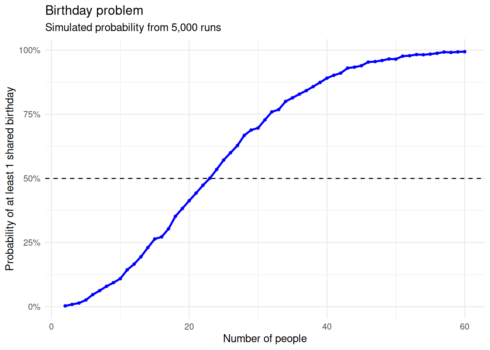

Analysis of the birthday problem using probability simulations
Author
hzg00-jpg
Published
November 2, 2026
Birthday problem: In a room of n people, what is the probability that at least 2 people will share a birthday?
Although there are 365 days in a year, the unintuitive answer is that if there are just 23 people in the same room, there is over a 50% chance that two people share the same birthday. In this project, we will try to explain the unintuitive answer by running simulations that shows the probability that at least 2 people have the same birthday in a room of n people.
This simulation creates a function called simulate_birthday() that randomly assigns a birthday to each person in a room, assuming 365 equally likely birthdays. It then checks for matching birthdays using duplicated() and any(), returning TRUE if there is a match and FALSE otherwise. This process is repeated 5,000 times to estimate the probability of a shared birthday by calculating the proportion of successful matches. We then map this process using using map_dbl(), applying this process to room sizes ranging from 2 to 60 people, allowing us to see how the probability changes as the number of people increases.
ggplot(results, aes(x = people, y = probability)) +geom_line(color ="blue", linewidth =1) +geom_point(color ="blue", size =1) +geom_hline(yintercept =0.5,linetype ="dashed", ) +scale_y_continuous(labels = scales::label_percent() ) +labs(title ="Birthday problem",subtitle ="Simulated probability from 5,000 runs",x ="Number of people",y ="Probability of at least 1 shared birthday" ) +theme_minimal()

The results show that the probability of a shared birthday increases rapidly as the number of people grows. At n=10 people, there is already a ~11.5% chance that 2 people share the same birthday, a very unintuitive number as there are 365 days in a year. At n=25 people, it’s a a ~56.6% chance that 2 people share the same birthday, and at n=50 people, it’s almost guaranteed that we have 2 people with the same birthday.
From the plot, we can see that the probability grows the most rapidly from 0 to around 35 people, then slows down as it approaches the asymptote of 100% probability. The unintuitive answer stems from the fact that we are not checking whether someone shares a birthday with one specific person, but whether any two people in the room share a birthday. As there are more and more people, the number of possible pairs increases rapidly, making a shared birthday much more likely than one might initially expect.